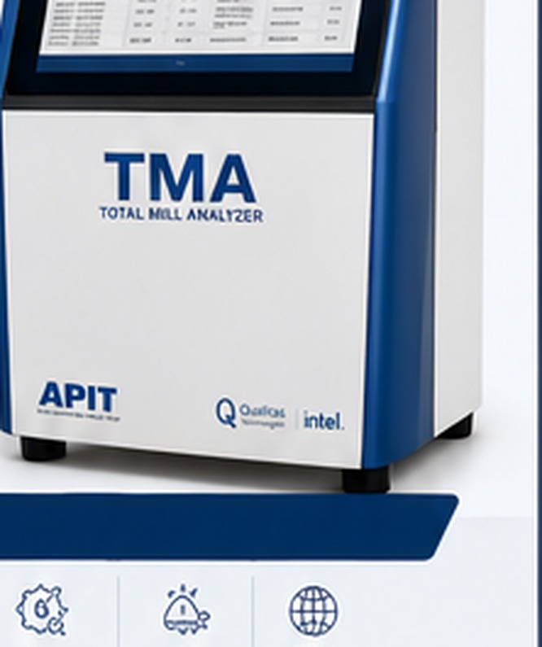

Rice Millers
Buy better paddy, run a tighter mill line, and ship consistent, verified quality every day.
TMA — Total Mill Analyzer — is developed by APIT Machinery Pvt. Ltd. in collaboration with Qualitas Technologies and Intel, giving rice mills objective, sample-level visibility into grain quality at every stage of the process.
Grain quality is usually judged by eye — at the gate when paddy arrives, on the floor as it moves through the mill, and at the end when rice is bagged for dispatch. TMA replaces that guesswork with grain-by-grain imaging and classification, so the same objective standard applies at every stage: Buy Right, Mill Right and Sell Right.
Every sample is guided step by step, with voice narration available in English, Hindi, Kannada, Tamil, Telugu and Malayalam — so any operator on the mill floor can run a full analysis. Results flow straight into one connected Reports & Analytics history, QR-traceable from procurement lot to dispatch batch.

APIT's rice-processing knowledge, Qualitas Technologies' Eagle Eye AI platform and Intel-enabled edge technology come together to create a new level of grain and mill intelligence — measurable, consistent and built for the working mill.
Rice-processing expertise. Decades of milling-line engineering translated into the parameters that actually govern yield and grade.
AI vision platform. The Eagle Eye Video Analytics Platform, trained for grain detection, classification and measurement.
Edge AI technologies. Intel-enabled edge computing that runs the models next to the machine.
Buy better paddy, run a tighter mill line, and ship consistent, verified quality every day.
Back every shipment with objective, sample-level grading your international buyers can trust.
Replace slow, subjective manual grading with fast, repeatable, instrument-based analysis.
Apply one consistent, auditable quality standard across procurement and inspection programmes.
See the analysis run on your samples, on your parameters, and take the report away with you.